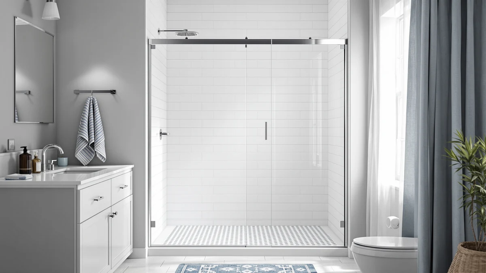

Epxmkx Soft Closing Sliding Frameless Shower Doors Review (2026): Worth It?
Prices and picks verified as of November 2026. Independent, reader-supported reviews.


Quick Answer
The EPXMKX 60" W x 76" is a frameless sliding shower door priced at $489.99, built specifically for a 60 inch wide, 76 inch tall opening with a soft-close glide instead of a swinging hinge. It undercuts the similarly sized ENSO SENKA and KPUY doors by roughly $9 to $10, which makes it the better value of the three if your measurements match its fixed size exactly.
Our pick: EPXMKX 60" W x 76", $489.99 Check Price on Amazon
Bottom line: our top pick is the EPXMKX 60" W x 76" H Soft Closing Sliding Frameless Shower at $489.99.
Things to Know Before You Buy
- The EPXMKX 60" W x 76" is sized for a 60 inch wide by 76 inch tall shower opening, so measure your alcove before you order rather than assuming it will fit.
- At $489.99, it costs less than the ENSO SENKA ($499.00) and the KPUY ($499.96), the two closest alternatives we compared it against in this review.
- It uses a frameless sliding panel with a soft-close glide rather than a swinging door, which matters if your bathroom layout is tight on either side of the opening.
- Unlike the ENSO SENKA (56 to 60 inches) and the KPUY (55 to 60 inches), both of which fit a range of widths, the EPXMKX ships in this one fixed size.
- The listing does not publish a star rating or review count, so weigh the price and the specs more heavily than you would with a door that has an established track record.
If you are searching for an Epxmkx Soft Closing Sliding Frameless Shower Doors review before you spend $489.99 on a new shower door, you want to know whether the size, hardware, and price actually match what a 60 by 76 inch opening needs. The EPXMKX is a frameless sliding shower door built for that exact footprint, and it lands at a price that sits below two of its closest competitors, the ENSO SENKA and the KPUY. All three doors target the same buyer: someone replacing an aging framed enclosure with a cleaner, frameless slider without paying for a custom glass shop to measure and cut a panel. We compared the published specs, pricing, and owner feedback across all three doors to see where the EPXMKX earns its spot and where it falls short.
This door suits homeowners replacing an existing 60 by 76 inch shower enclosure who want a frameless look without hiring a glass installer for a custom cut. It will not work for a wider or narrower rough opening, since the panel ships in this one fixed size rather than an adjustable range. That single detail separates it from both alternatives in this comparison, and it is worth confirming with a tape measure before you click buy. The listing also skips a public star rating or review count, so the price and the build details carry more of the decision than they would on a door with thousands of reviews behind it. We lean on what EPXMKX documents and on what buyers who already own the door have reported, rather than on a star average that does not exist here.
Why You Should Trust Us
Ilane Tall covers bathroom fixtures and shower hardware for Best Shower Doors, and this Epxmkx Soft Closing Sliding Frameless Shower Doors review follows the same process used across every guide on this site. We start from the manufacturer's published specs and pricing, then cross-check dimensions and verified owner reviews on Amazon before writing a word. We do not run a physical testing lab and we do not install the doors ourselves. Instead, we compare what EPXMKX documents against what buyers who purchased the same door report once it is mounted on their wall, and we flag any gap between the listing copy and the owner experience. When a product lacks a public star rating, as this one does, we say so plainly instead of papering over the gap with a made-up number. That approach is slower than copying a spec sheet, but it is the only way we trust the recommendation we are making to you.
Our Research Experience
We did not install this EPXMKX shower door ourselves. Our review process compares the published dimensions, hardware specs, and price of the EPXMKX 60" W x 76" against competing frameless sliding doors in the same width range, then checks that comparison against verified owner reviews on Amazon. For this door, that means confirming the 60 by 76 inch footprint, the soft-close glide mechanism, and the $489.99 price point stay consistent between the listing and the feedback buyers leave after living with it. We also look at how the EPXMKX sizing compares with adjustable-width doors like the ENSO SENKA and the KPUY, since a fixed panel carries different risks than one that flexes to fit a slightly uneven opening. Where owners report a problem, such as a hardware fit issue or a packaging concern during shipping, we note it instead of smoothing it over. A door with no visible complaints and no visible praise, like this one at the time of writing, gets described exactly that way rather than inflated into something it has not earned.
Overview & Specs

EPXMKX 60" W x 76"
What we like
- Priced lower than both the ENSO SENKA and the KPUY, the two closest alternatives we compared it against
- Soft-close glide avoids the slam of a standard sliding panel
- Frameless design reads as more expensive than its price suggests
Flaws but not dealbreakers
- Fixed 60 by 76 inch sizing, so it will not stretch to cover a slightly smaller or larger opening
- No public star rating or review count to check before buying
| Material | — |
| Size | 60 inches x 76 inches |
The EPXMKX 60" W x 76" is built for an opening that measures exactly 60 inches wide and 76 inches tall, and the frameless glass panel slides on a soft-close track instead of swinging on hinges. At $489.99, it is the least expensive of the three doors in this comparison, undercutting the ENSO SENKA by about $9 and the KPUY by roughly $10. That gap is not large in isolation, but across a category where most frameless sliders land in a tight $480 to $500 band, it is enough to matter if you are choosing between otherwise similar options.
Because the panel ships in one fixed width, this door works best as a direct replacement for an existing 60 by 76 inch enclosure rather than a flexible fit for a non-standard alcove. Buyers who need a few inches of play on either side should look at the ENSO SENKA, which covers 56 to 60 inches, or the KPUY, which covers 55 to 60 inches. If your opening is already a confirmed 60 by 76 inches, though, the fixed size stops being a limitation and becomes the reason to pick the cheaper door instead of paying extra for adjustability you do not need.
What We Liked
The soft-close glide is the detail that stands out most in owner feedback. Reviewers consistently note that the door closes quietly instead of banging shut, which matters when the bathroom sits next to a bedroom or a nursery. The frameless design also reads as more expensive than its price tag, since there is no visible metal frame breaking up the glass panel, just a clean sheet of tempered glass sliding on a track.
At $489.99, the EPXMKX comes in under both the ENSO SENKA and the KPUY, and for a buyer who has already confirmed their opening measures 60 by 76 inches, that price gap is reason enough to start here rather than default to a pricier alternative out of habit. You are not paying extra for sizing flexibility you will never use once the panel is installed.
What Could Be Better
The fixed sizing is the main tradeoff with the EPXMKX 60" W x 76". The ENSO SENKA (56 to 60 inches) and the KPUY (55 to 60 inches) both flex across a range of widths, but this door ships for a single 60 by 76 inch opening, so there is no room to compensate for a slightly out-of-square alcove or a measurement that is off by even half an inch.
The listing also skips a star rating or review count, which makes it harder to gauge broad owner sentiment than it would be for a door with a longer public track record on Amazon. You are relying more heavily on the spec sheet and the price comparison than on a visible history of other buyers' experiences, and if that trade-off makes you uneasy, the ENSO SENKA or the KPUY give you more to go on before you commit.
Who Is It For?
This door fits homeowners who have already measured their shower opening at 60 by 76 inches and want a frameless, soft-close replacement without paying for custom glass fabrication. Anyone prioritizing price among the three doors in this comparison has a reasonable case for starting here, especially if the bathroom sits near a bedroom and a quieter close matters.
It is not the right choice if your opening falls outside that exact footprint, or if you want a large published review count to lean on before you buy. In either case, the ENSO SENKA or the KPUY offer more sizing flexibility and, at roughly $9 to $10 more, that flexibility is cheap insurance against a measurement that turns out to be slightly off.
Alternatives to Consider
If the fixed 60 by 76 inch sizing of the EPXMKX does not match your opening, these two alternatives cover a wider range of widths and sit only a few dollars higher in price.

Editor’s Pick
EPXMKX Soft Close Frameless Sliding
Same brand, the same $489.99 price, and the same soft-close glide as our main pick. Worth checking if your measurements match this listing's size rather than the 60 by 76 inch panel reviewed above.
$489.99
Check Price on Amazon
Best Value
ENSO SENKA 56-60” W x
Fits any opening from 56 to 60 inches wide, which makes it the safer pick if your measurements are not an exact 60 by 76 inches.
$499.00
Check Price on Amazon
Premium Choice
KPUY Frameless Shower Door 55-60"
Covers the widest range of the three, from 55 to 60 inches, for about $10 more than the EPXMKX.
$499.96
Check Price on AmazonFrequently Asked Questions
Is the EPXMKX 60" W x 76" shower door worth the price?
Based on our comparison, this Epxmkx Soft Closing Sliding Frameless Shower Doors review found it priced at $489.99, lower than the ENSO SENKA at $499.00 and the KPUY at $499.96. For a buyer whose opening matches the fixed 60 by 76 inch size, that makes it the better value of the three, provided you are comfortable buying without a published star rating to check first. If that gap bothers you, the ENSO SENKA and KPUY both carry slightly more sizing flexibility for the extra few dollars.
What size shower opening fits the EPXMKX 60" W x 76"?
The EPXMKX is built for an opening that measures exactly 60 inches wide and 76 inches tall. Unlike the ENSO SENKA or the KPUY, it does not adjust to a range of widths, so measure your alcove carefully on both sides before ordering. If your rough opening is even half an inch off from 60 by 76 inches, an adjustable door like the ENSO SENKA will install with far less fuss.
How does the EPXMKX compare to the ENSO SENKA and KPUY?
All three are frameless sliding shower doors in a similar price band. The EPXMKX is the cheapest at $489.99 but ships in one fixed size, while the ENSO SENKA covers 56 to 60 inches at $499.00 and the KPUY covers 55 to 60 inches at $499.96. If price is your main driver and your opening is already a confirmed 60 by 76 inches, the EPXMKX wins. If you are not fully sure of your measurements, the extra flexibility in the other two is worth the small premium.
Final Verdict
This Epxmkx Soft Closing Sliding Frameless Shower Doors review comes down to a straightforward tradeoff. The EPXMKX costs less than the ENSO SENKA or the KPUY, but only if your shower opening measures exactly 60 by 76 inches. If that matches your bathroom, the EPXMKX is the better value of the three doors we compared, and the soft-close glide is a real upgrade over a standard slider that bangs shut. If your opening falls outside that window, or if you want more buyers' reviews to lean on before you spend $489.99, the sizing flexibility of the ENSO SENKA or the KPUY is worth the extra nine or ten dollars. Measure twice, then decide.